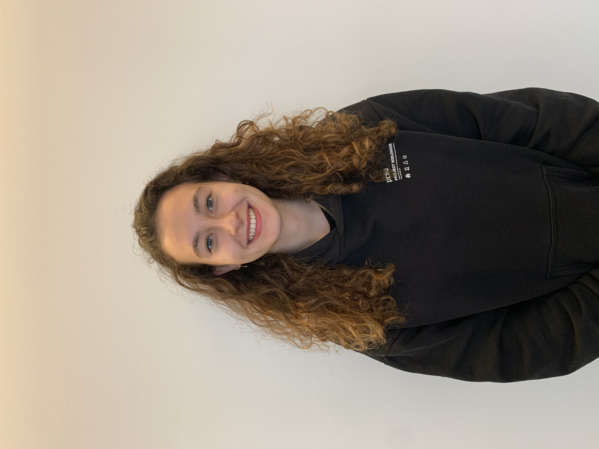

Our Team
ScrollZeynep Çakır

Hello, I am Zeynep Çakır. I was born in Istanbul and I’m 17 years old. I go to Notre Dame de Sion French High School and I am in eleventh grade. I’m interested in biological sciences, coding and playing tennis. I love reading books, spending time with my friends and watching tv shows. The main reason I joined iGEM was to learn about synthetic biology and meet people with the same interests from all around the world.
Ceren Yurdakul
Hi, I am Ceren Yurdakul. I was born in Istanbul, in 2004. I am in eleventh grade in Notre Dame de Sion French High School. I am interested in medicine and chemistry. I love doing sports such as tennis and fitness. I spend most of my free time hanging out with my friends. I participated in iGEM in order to gain experience and learn about problems and their possible solutions.
Zeynep Alıcı
Hi, I am Zeynep Alıcı. I was born in Istanbul in 2003. I go to Saint Benoit French High School and I am in twelfth grade. I am interested in biology, medicine and mathematics. I love playing volleyball, reading books and spending time with my friends. I joined İGEM to improve myself in synthetic biology and find solutions to worldwide problems.
Azra Derin Şansal
Hi, I am Azra Derin Şansal. I was born in Istanbul, in 2005. I go to Sainte Pulchérie French High School and I am in tenth grade. I am interested in biological sciences and mathematics. I love reading books and I play the electric guitar. I’m a part of the robotics team of my school and I do mechanics. I participated in iGEM to learn about worldwide problems, find solutions to them and learn about synthetic biology.
Yalın Kumru
Hi, I’m Yalın Kumru and I’m 18 years old. I was born and raised in Istanbul, Turkey. I’m a senior at Notre Dame de Sion French high school. Since I want to study medicine, iGEM is a really nice opportunity for me to expand my knowledge on biology. Not only did I enjoy working with this team, but I also gained research and lab experience.
Nezih Arın Alanay
I’m Nezih Arın Alanay and I’m a 17 year old junior at Notre Dame de Sion French high school. I was born in Ankara, the capital of Turkey. iGEM is a big step toward my goal of pursuing a career in biology. I am interested in molecular biology and advanced mathematics. This process helped me develop my research and problem solving skills, and I had lots of fun working with this team.
Esma Aybakan
She is a Ph.D. student of Medical Biotechnology Program at Acıbadem University. She is interested in phage display technology, microbiology, synthetic biology, biotechnological innovations and entrepreneurship. She has got experiences that laboratory works for four years. She is taken some courses about the entrepreneurship and project planing. She likes writing literary essays, visiting art galleries, painting and doing Ebru art. She wants to develop the new diagnostic tests in medical fields that helps to people.